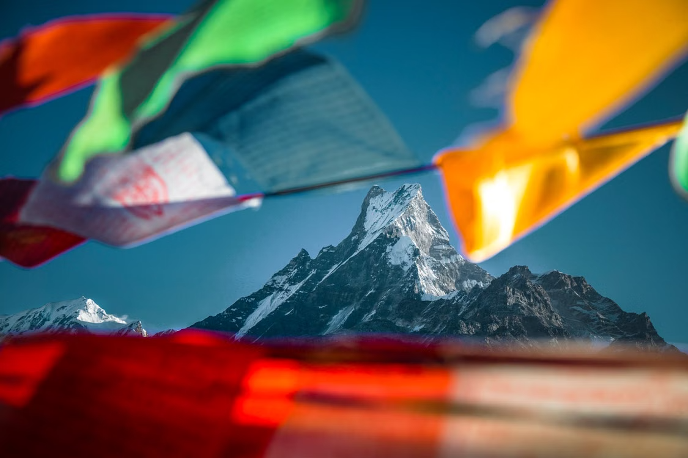
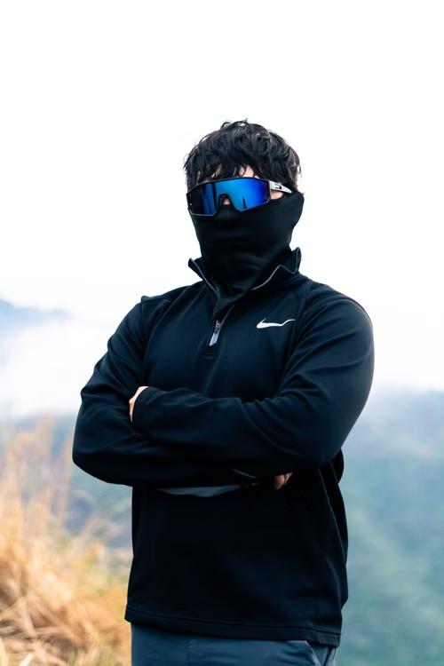
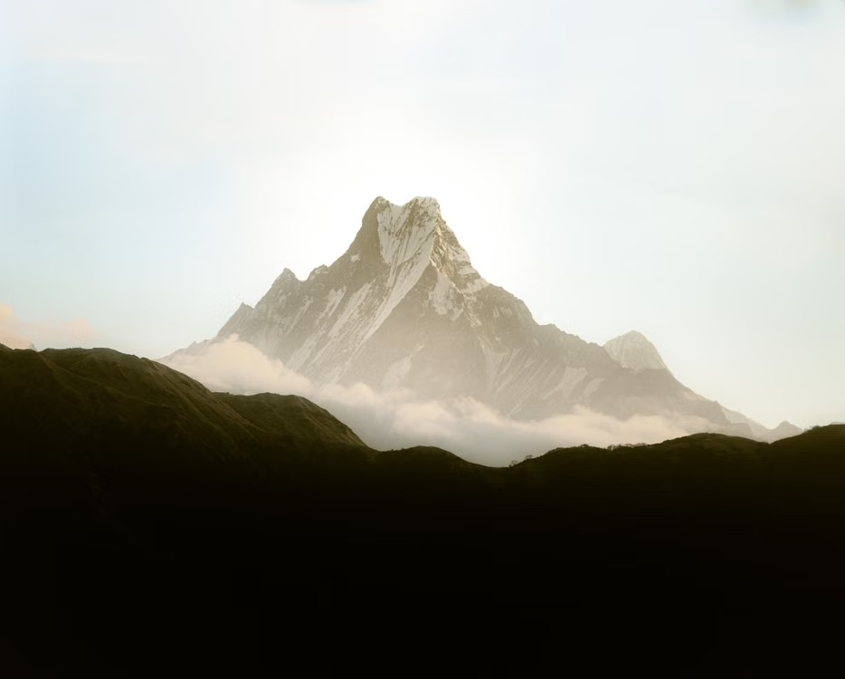
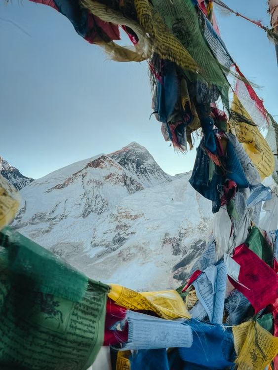
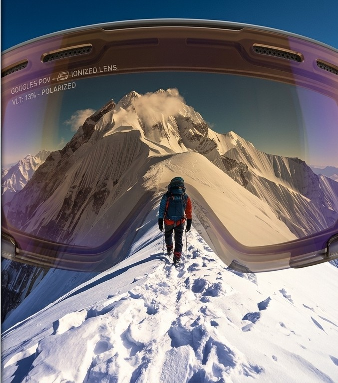
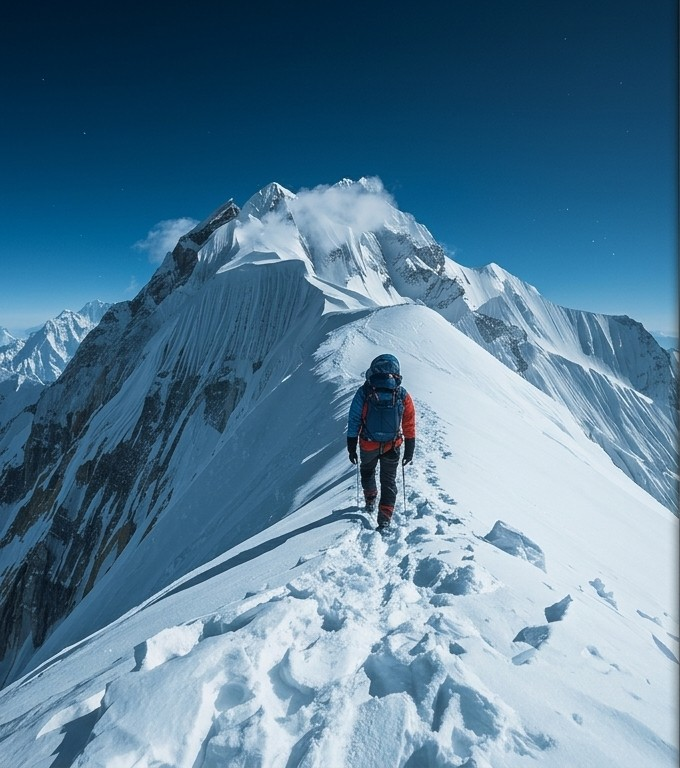

Macchapuchre peak
Cold hands, warm heart.
→NEPAL / HIMALAYAS
Premium eyewear for those who chase
higher ground.
THE STORY
It started with a simple feeling — that the mountains called differently.
What began as a personal journey through Nepal’s rugged trails and winding roads soon became a purpose: to build eyewear that could handle the real world — not just look good in it.
OUR JOURNEY →


THE CRAFT
Our eyewear is designed for extreme conditions — high altitude, intense sunlight, wind, dust and changing weather.
Because the mountains don’t give you second chances, and neither should your gear.
TECHNOLOGY →EXPLORE
Real places. Real rides. Real stories. A collection of moments from the road, the mountains, and the people who chase them.
READ THE JOURNAL →THE EXPERIENCE
It’s not just about what you see,
but how you see it.

